독도 탐험대 이미지 목록
이미지 PNG 277장 · 그림을 누르면 원본 파일이 열립니다. 같은 이름으로 바꾸고 게임을 새로고침하세요.
탐험대원 · 첨부 원본
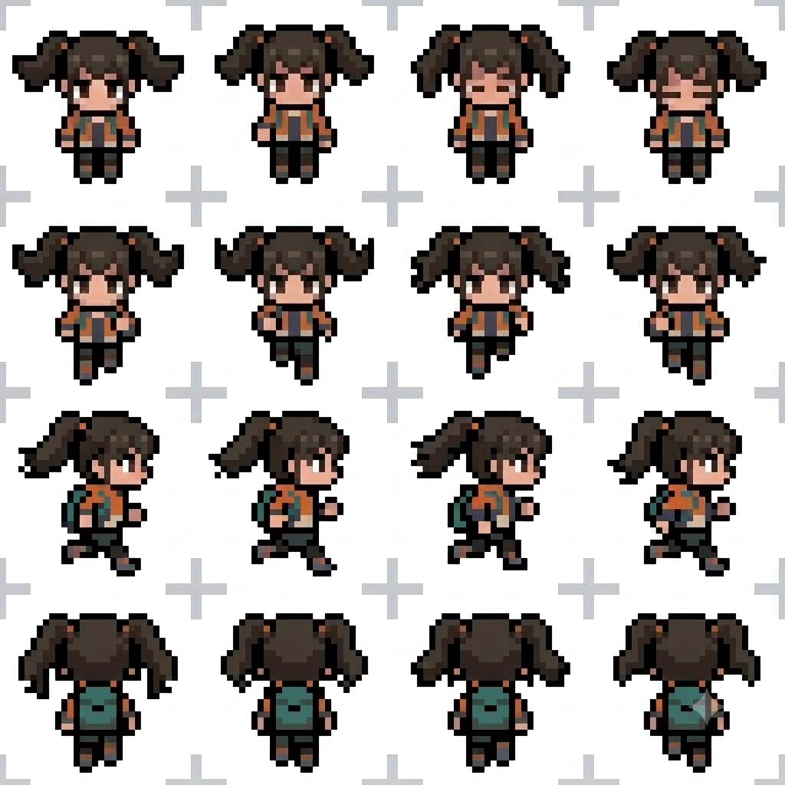
여학생 도트 시트주인공 4×4 시트 · 1024×1024assets/characters/girl-sheet.png첨부 원본. 한 칸은 게임에서 32×32로 표시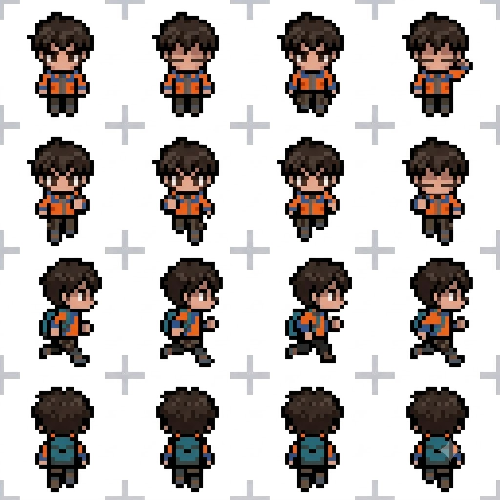
남학생 도트 시트주인공 4×4 시트 · 1024×1024assets/characters/boy-sheet.png첨부 원본. 왼쪽은 오른쪽 행의 좌우 반전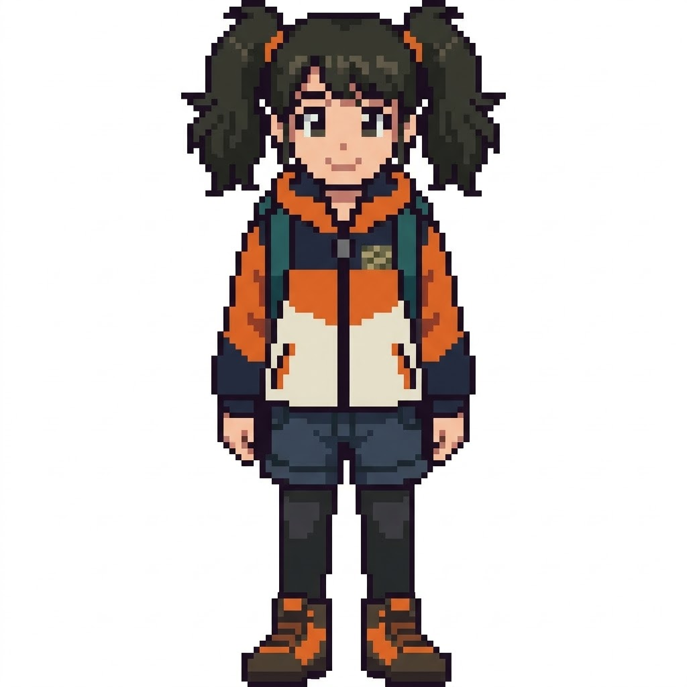
여학생 전신캐릭터 선택창 · 1024×1024assets/characters/girl-portrait.png첨부 원본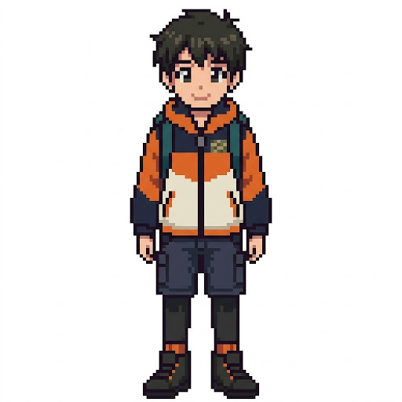
남학생 전신캐릭터 선택창 · 512×512assets/characters/boy-portrait.png첨부 원본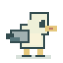
갈꼬미정면 · 도감 / 상대 / 필드 · 128×128assets/monsters/001.png괭이갈매기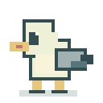
갈꼬미내 동료 · 전투 · 128×128assets/monsters/back/001.png괭이갈매기 · 기본 파일은 정면 좌우 반전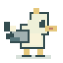
갈바람정면 · 도감 / 상대 / 필드 · 128×128assets/monsters/002.png괭이갈매기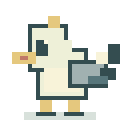
갈바람내 동료 · 전투 · 128×128assets/monsters/back/002.png괭이갈매기 · 기본 파일은 정면 좌우 반전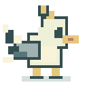
해풍익정면 · 도감 / 상대 / 필드 · 128×128assets/monsters/003.png괭이갈매기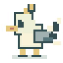
해풍익내 동료 · 전투 · 128×128assets/monsters/back/003.png괭이갈매기 · 기본 파일은 정면 좌우 반전 제비콩정면 · 도감 / 상대 / 필드 · 128×128assets/monsters/004.png바다제비
제비콩정면 · 도감 / 상대 / 필드 · 128×128assets/monsters/004.png바다제비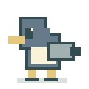
제비콩내 동료 · 전투 · 128×128assets/monsters/back/004.png바다제비 · 기본 파일은 정면 좌우 반전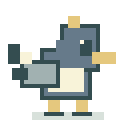
밤제비정면 · 도감 / 상대 / 필드 · 128×128assets/monsters/005.png바다제비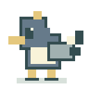
밤제비내 동료 · 전투 · 128×128assets/monsters/back/005.png바다제비 · 기본 파일은 정면 좌우 반전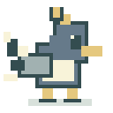
별제비정면 · 도감 / 상대 / 필드 · 128×128assets/monsters/006.png바다제비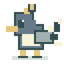
별제비내 동료 · 전투 · 128×128assets/monsters/back/006.png바다제비 · 기본 파일은 정면 좌우 반전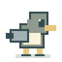
슴꼬미정면 · 도감 / 상대 / 필드 · 128×128assets/monsters/007.png슴새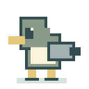
슴꼬미내 동료 · 전투 · 128×128assets/monsters/back/007.png슴새 · 기본 파일은 정면 좌우 반전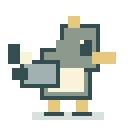
슴바람정면 · 도감 / 상대 / 필드 · 128×128assets/monsters/008.png슴새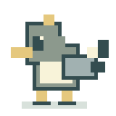
슴바람내 동료 · 전투 · 128×128assets/monsters/back/008.png슴새 · 기본 파일은 정면 좌우 반전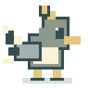
너울슴정면 · 도감 / 상대 / 필드 · 128×128assets/monsters/009.png슴새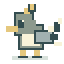
너울슴내 동료 · 전투 · 128×128assets/monsters/back/009.png슴새 · 기본 파일은 정면 좌우 반전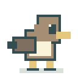
매동이정면 · 도감 / 상대 / 필드 · 128×128assets/monsters/010.png매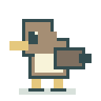
매동이내 동료 · 전투 · 128×128assets/monsters/back/010.png매 · 기본 파일은 정면 좌우 반전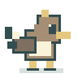
절벽매정면 · 도감 / 상대 / 필드 · 128×128assets/monsters/011.png매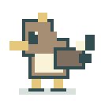
절벽매내 동료 · 전투 · 128×128assets/monsters/back/011.png매 · 기본 파일은 정면 좌우 반전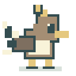
창공매정면 · 도감 / 상대 / 필드 · 128×128assets/monsters/012.png매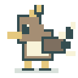
창공매내 동료 · 전투 · 128×128assets/monsters/back/012.png매 · 기본 파일은 정면 좌우 반전 조롱콩정면 · 도감 / 상대 / 필드 · 128×128assets/monsters/013.png황조롱이
조롱콩정면 · 도감 / 상대 / 필드 · 128×128assets/monsters/013.png황조롱이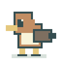
조롱콩내 동료 · 전투 · 128×128assets/monsters/back/013.png황조롱이 · 기본 파일은 정면 좌우 반전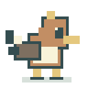
조롱날정면 · 도감 / 상대 / 필드 · 128×128assets/monsters/014.png황조롱이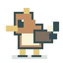
조롱날내 동료 · 전투 · 128×128assets/monsters/back/014.png황조롱이 · 기본 파일은 정면 좌우 반전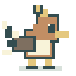
노을날정면 · 도감 / 상대 / 필드 · 128×128assets/monsters/015.png황조롱이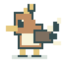
노을날내 동료 · 전투 · 128×128assets/monsters/back/015.png황조롱이 · 기본 파일은 정면 좌우 반전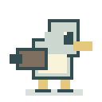
수리퐁정면 · 도감 / 상대 / 필드 · 128×128assets/monsters/016.png물수리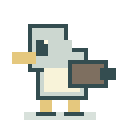
수리퐁내 동료 · 전투 · 128×128assets/monsters/back/016.png물수리 · 기본 파일은 정면 좌우 반전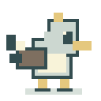
바다수리정면 · 도감 / 상대 / 필드 · 128×128assets/monsters/017.png물수리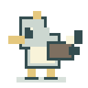
바다수리내 동료 · 전투 · 128×128assets/monsters/back/017.png물수리 · 기본 파일은 정면 좌우 반전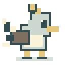
해류익정면 · 도감 / 상대 / 필드 · 128×128assets/monsters/018.png물수리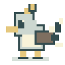
해류익내 동료 · 전투 · 128×128assets/monsters/back/018.png물수리 · 기본 파일은 정면 좌우 반전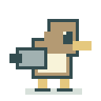
참새콩정면 · 도감 / 상대 / 필드 · 128×128assets/monsters/019.png섬참새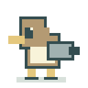
참새콩내 동료 · 전투 · 128×128assets/monsters/back/019.png섬참새 · 기본 파일은 정면 좌우 반전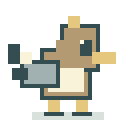
섬참봉정면 · 도감 / 상대 / 필드 · 128×128assets/monsters/020.png섬참새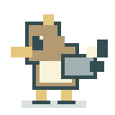
섬참봉내 동료 · 전투 · 128×128assets/monsters/back/020.png섬참새 · 기본 파일은 정면 좌우 반전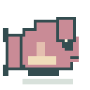
혹꼬미정면 · 도감 / 상대 / 필드 · 128×128assets/monsters/021.png혹돔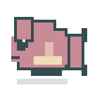
혹꼬미내 동료 · 전투 · 128×128assets/monsters/back/021.png혹돔 · 기본 파일은 정면 좌우 반전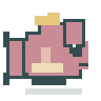
혹단이정면 · 도감 / 상대 / 필드 · 128×128assets/monsters/022.png혹돔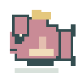
혹단이내 동료 · 전투 · 128×128assets/monsters/back/022.png혹돔 · 기본 파일은 정면 좌우 반전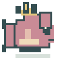
파도장정면 · 도감 / 상대 / 필드 · 128×128assets/monsters/023.png혹돔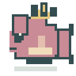
파도장내 동료 · 전투 · 128×128assets/monsters/back/023.png혹돔 · 기본 파일은 정면 좌우 반전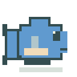
파랑콩정면 · 도감 / 상대 / 필드 · 128×128assets/monsters/024.png파랑돔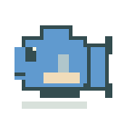
파랑콩내 동료 · 전투 · 128×128assets/monsters/back/024.png파랑돔 · 기본 파일은 정면 좌우 반전파랑빛정면 · 도감 / 상대 / 필드 · 128×128assets/monsters/025.png파랑돔파랑빛내 동료 · 전투 · 128×128assets/monsters/back/025.png파랑돔 · 기본 파일은 정면 좌우 반전푸른왕정면 · 도감 / 상대 / 필드 · 128×128assets/monsters/026.png파랑돔푸른왕내 동료 · 전투 · 128×128assets/monsters/back/026.png파랑돔 · 기본 파일은 정면 좌우 반전얼룩콩정면 · 도감 / 상대 / 필드 · 128×128assets/monsters/027.png독도얼룩망둑얼룩콩내 동료 · 전투 · 128×128assets/monsters/back/027.png독도얼룩망둑 · 기본 파일은 정면 좌우 반전얼룩돌정면 · 도감 / 상대 / 필드 · 128×128assets/monsters/028.png독도얼룩망둑얼룩돌내 동료 · 전투 · 128×128assets/monsters/back/028.png독도얼룩망둑 · 기본 파일은 정면 좌우 반전독도룩정면 · 도감 / 상대 / 필드 · 128×128assets/monsters/029.png독도얼룩망둑독도룩내 동료 · 전투 · 128×128assets/monsters/back/029.png독도얼룩망둑 · 기본 파일은 정면 좌우 반전돌줄이정면 · 도감 / 상대 / 필드 · 128×128assets/monsters/030.png돌돔돌줄이내 동료 · 전투 · 128×128assets/monsters/back/030.png돌돔 · 기본 파일은 정면 좌우 반전돌무늬정면 · 도감 / 상대 / 필드 · 128×128assets/monsters/031.png돌돔돌무늬내 동료 · 전투 · 128×128assets/monsters/back/031.png돌돔 · 기본 파일은 정면 좌우 반전암초장정면 · 도감 / 상대 / 필드 · 128×128assets/monsters/032.png돌돔암초장내 동료 · 전투 · 128×128assets/monsters/back/032.png돌돔 · 기본 파일은 정면 좌우 반전벵꼬미정면 · 도감 / 상대 / 필드 · 128×128assets/monsters/033.png벵에돔벵꼬미내 동료 · 전투 · 128×128assets/monsters/back/033.png벵에돔 · 기본 파일은 정면 좌우 반전벵물결정면 · 도감 / 상대 / 필드 · 128×128assets/monsters/034.png벵에돔벵물결내 동료 · 전투 · 128×128assets/monsters/back/034.png벵에돔 · 기본 파일은 정면 좌우 반전심해벵정면 · 도감 / 상대 / 필드 · 128×128assets/monsters/035.png벵에돔심해벵내 동료 · 전투 · 128×128assets/monsters/back/035.png벵에돔 · 기본 파일은 정면 좌우 반전 볼락콩정면 · 도감 / 상대 / 필드 · 128×128assets/monsters/036.png조피볼락볼락콩내 동료 · 전투 · 128×128assets/monsters/back/036.png조피볼락 · 기본 파일은 정면 좌우 반전볼락돌정면 · 도감 / 상대 / 필드 · 128×128assets/monsters/037.png조피볼락볼락돌내 동료 · 전투 · 128×128assets/monsters/back/037.png조피볼락 · 기본 파일은 정면 좌우 반전바위볼정면 · 도감 / 상대 / 필드 · 128×128assets/monsters/038.png조피볼락바위볼내 동료 · 전투 · 128×128assets/monsters/back/038.png조피볼락 · 기본 파일은 정면 좌우 반전자리퐁정면 · 도감 / 상대 / 필드 · 128×128assets/monsters/039.png자리돔자리퐁내 동료 · 전투 · 128×128assets/monsters/back/039.png자리돔 · 기본 파일은 정면 좌우 반전자리빛정면 · 도감 / 상대 / 필드 · 128×128assets/monsters/040.png자리돔자리빛내 동료 · 전투 · 128×128assets/monsters/back/040.png자리돔 · 기본 파일은 정면 좌우 반전문꼬미정면 · 도감 / 상대 / 필드 · 128×128assets/monsters/041.png문어류문꼬미내 동료 · 전투 · 128×128assets/monsters/back/041.png문어류 · 기본 파일은 정면 좌우 반전문팔이정면 · 도감 / 상대 / 필드 · 128×128assets/monsters/042.png문어류문팔이내 동료 · 전투 · 128×128assets/monsters/back/042.png문어류 · 기본 파일은 정면 좌우 반전문어장정면 · 도감 / 상대 / 필드 · 128×128assets/monsters/043.png문어류문어장내 동료 · 전투 · 128×128assets/monsters/back/043.png문어류 · 기본 파일은 정면 좌우 반전징꼬미정면 · 도감 / 상대 / 필드 · 128×128assets/monsters/044.png살오징어징꼬미내 동료 · 전투 · 128×128assets/monsters/back/044.png살오징어 · 기본 파일은 정면 좌우 반전징반짝정면 · 도감 / 상대 / 필드 · 128×128assets/monsters/045.png살오징어징반짝내 동료 · 전투 · 128×128assets/monsters/back/045.png살오징어 · 기본 파일은 정면 좌우 반전별징어정면 · 도감 / 상대 / 필드 · 128×128assets/monsters/046.png살오징어별징어내 동료 · 전투 · 128×128assets/monsters/back/046.png살오징어 · 기본 파일은 정면 좌우 반전복돌이정면 · 도감 / 상대 / 필드 · 128×128assets/monsters/047.png전복류복돌이내 동료 · 전투 · 128×128assets/monsters/back/047.png전복류 · 기본 파일은 정면 좌우 반전복단이정면 · 도감 / 상대 / 필드 · 128×128assets/monsters/048.png전복류복단이내 동료 · 전투 · 128×128assets/monsters/back/048.png전복류 · 기본 파일은 정면 좌우 반전진주복정면 · 도감 / 상대 / 필드 · 128×128assets/monsters/049.png전복류진주복내 동료 · 전투 · 128×128assets/monsters/back/049.png전복류 · 기본 파일은 정면 좌우 반전소라콩정면 · 도감 / 상대 / 필드 · 128×128assets/monsters/050.png소라류소라콩내 동료 · 전투 · 128×128assets/monsters/back/050.png소라류 · 기본 파일은 정면 좌우 반전소라돌정면 · 도감 / 상대 / 필드 · 128×128assets/monsters/051.png소라류소라돌내 동료 · 전투 · 128×128assets/monsters/back/051.png소라류 · 기본 파일은 정면 좌우 반전너울라정면 · 도감 / 상대 / 필드 · 128×128assets/monsters/052.png소라류너울라내 동료 · 전투 · 128×128assets/monsters/back/052.png소라류 · 기본 파일은 정면 좌우 반전게밤이정면 · 도감 / 상대 / 필드 · 128×128assets/monsters/053.png성게류게밤이내 동료 · 전투 · 128×128assets/monsters/back/053.png성게류 · 기본 파일은 정면 좌우 반전가시밤정면 · 도감 / 상대 / 필드 · 128×128assets/monsters/054.png성게류가시밤내 동료 · 전투 · 128×128assets/monsters/back/054.png성게류 · 기본 파일은 정면 좌우 반전별가시정면 · 도감 / 상대 / 필드 · 128×128assets/monsters/055.png성게류별가시내 동료 · 전투 · 128×128assets/monsters/back/055.png성게류 · 기본 파일은 정면 좌우 반전삼꼬미정면 · 도감 / 상대 / 필드 · 128×128assets/monsters/056.png해삼류삼꼬미내 동료 · 전투 · 128×128assets/monsters/back/056.png해삼류 · 기본 파일은 정면 좌우 반전삼돌이정면 · 도감 / 상대 / 필드 · 128×128assets/monsters/057.png해삼류삼돌이내 동료 · 전투 · 128×128assets/monsters/back/057.png해삼류 · 기본 파일은 정면 좌우 반전바다삼정면 · 도감 / 상대 / 필드 · 128×128assets/monsters/058.png해삼류바다삼내 동료 · 전투 · 128×128assets/monsters/back/058.png해삼류 · 기본 파일은 정면 좌우 반전새우콩정면 · 도감 / 상대 / 필드 · 128×128assets/monsters/059.png새우류새우콩내 동료 · 전투 · 128×128assets/monsters/back/059.png새우류 · 기본 파일은 정면 좌우 반전새우빛정면 · 도감 / 상대 / 필드 · 128×128assets/monsters/060.png새우류새우빛내 동료 · 전투 · 128×128assets/monsters/back/060.png새우류 · 기본 파일은 정면 좌우 반전해광새정면 · 도감 / 상대 / 필드 · 128×128assets/monsters/061.png새우류해광새내 동료 · 전투 · 128×128assets/monsters/back/061.png새우류 · 기본 파일은 정면 좌우 반전합꼬미정면 · 도감 / 상대 / 필드 · 128×128assets/monsters/062.png홍합류합꼬미내 동료 · 전투 · 128×128assets/monsters/back/062.png홍합류 · 기본 파일은 정면 좌우 반전합단이정면 · 도감 / 상대 / 필드 · 128×128assets/monsters/063.png홍합류합단이내 동료 · 전투 · 128×128assets/monsters/back/063.png홍합류 · 기본 파일은 정면 좌우 반전먹빛합정면 · 도감 / 상대 / 필드 · 128×128assets/monsters/064.png홍합류먹빛합내 동료 · 전투 · 128×128assets/monsters/back/064.png홍합류 · 기본 파일은 정면 좌우 반전군소콩정면 · 도감 / 상대 / 필드 · 128×128assets/monsters/065.png군소류군소콩내 동료 · 전투 · 128×128assets/monsters/back/065.png군소류 · 기본 파일은 정면 좌우 반전구름소정면 · 도감 / 상대 / 필드 · 128×128assets/monsters/066.png군소류구름소내 동료 · 전투 · 128×128assets/monsters/back/066.png군소류 · 기본 파일은 정면 좌우 반전해국잎정면 · 도감 / 상대 / 필드 · 128×128assets/monsters/067.png해국해국잎내 동료 · 전투 · 128×128assets/monsters/back/067.png해국 · 기본 파일은 정면 좌우 반전해국송정면 · 도감 / 상대 / 필드 · 128×128assets/monsters/068.png해국해국송내 동료 · 전투 · 128×128assets/monsters/back/068.png해국 · 기본 파일은 정면 좌우 반전해국령정면 · 도감 / 상대 / 필드 · 128×128assets/monsters/069.png해국해국령내 동료 · 전투 · 128×128assets/monsters/back/069.png해국 · 기본 파일은 정면 좌우 반전기린잎정면 · 도감 / 상대 / 필드 · 128×128assets/monsters/070.png섬기린초기린잎내 동료 · 전투 · 128×128assets/monsters/back/070.png섬기린초 · 기본 파일은 정면 좌우 반전기린송정면 · 도감 / 상대 / 필드 · 128×128assets/monsters/071.png섬기린초기린송내 동료 · 전투 · 128×128assets/monsters/back/071.png섬기린초 · 기본 파일은 정면 좌우 반전황금린정면 · 도감 / 상대 / 필드 · 128×128assets/monsters/072.png섬기린초황금린내 동료 · 전투 · 128×128assets/monsters/back/072.png섬기린초 · 기본 파일은 정면 좌우 반전호장콩정면 · 도감 / 상대 / 필드 · 128×128assets/monsters/073.png왕호장근호장콩내 동료 · 전투 · 128×128assets/monsters/back/073.png왕호장근 · 기본 파일은 정면 좌우 반전호장잎정면 · 도감 / 상대 / 필드 · 128×128assets/monsters/074.png왕호장근호장잎내 동료 · 전투 · 128×128assets/monsters/back/074.png왕호장근 · 기본 파일은 정면 좌우 반전왕호장정면 · 도감 / 상대 / 필드 · 128×128assets/monsters/075.png왕호장근왕호장내 동료 · 전투 · 128×128assets/monsters/back/075.png왕호장근 · 기본 파일은 정면 좌우 반전
볼락콩정면 · 도감 / 상대 / 필드 · 128×128assets/monsters/036.png조피볼락볼락콩내 동료 · 전투 · 128×128assets/monsters/back/036.png조피볼락 · 기본 파일은 정면 좌우 반전볼락돌정면 · 도감 / 상대 / 필드 · 128×128assets/monsters/037.png조피볼락볼락돌내 동료 · 전투 · 128×128assets/monsters/back/037.png조피볼락 · 기본 파일은 정면 좌우 반전바위볼정면 · 도감 / 상대 / 필드 · 128×128assets/monsters/038.png조피볼락바위볼내 동료 · 전투 · 128×128assets/monsters/back/038.png조피볼락 · 기본 파일은 정면 좌우 반전자리퐁정면 · 도감 / 상대 / 필드 · 128×128assets/monsters/039.png자리돔자리퐁내 동료 · 전투 · 128×128assets/monsters/back/039.png자리돔 · 기본 파일은 정면 좌우 반전자리빛정면 · 도감 / 상대 / 필드 · 128×128assets/monsters/040.png자리돔자리빛내 동료 · 전투 · 128×128assets/monsters/back/040.png자리돔 · 기본 파일은 정면 좌우 반전문꼬미정면 · 도감 / 상대 / 필드 · 128×128assets/monsters/041.png문어류문꼬미내 동료 · 전투 · 128×128assets/monsters/back/041.png문어류 · 기본 파일은 정면 좌우 반전문팔이정면 · 도감 / 상대 / 필드 · 128×128assets/monsters/042.png문어류문팔이내 동료 · 전투 · 128×128assets/monsters/back/042.png문어류 · 기본 파일은 정면 좌우 반전문어장정면 · 도감 / 상대 / 필드 · 128×128assets/monsters/043.png문어류문어장내 동료 · 전투 · 128×128assets/monsters/back/043.png문어류 · 기본 파일은 정면 좌우 반전징꼬미정면 · 도감 / 상대 / 필드 · 128×128assets/monsters/044.png살오징어징꼬미내 동료 · 전투 · 128×128assets/monsters/back/044.png살오징어 · 기본 파일은 정면 좌우 반전징반짝정면 · 도감 / 상대 / 필드 · 128×128assets/monsters/045.png살오징어징반짝내 동료 · 전투 · 128×128assets/monsters/back/045.png살오징어 · 기본 파일은 정면 좌우 반전별징어정면 · 도감 / 상대 / 필드 · 128×128assets/monsters/046.png살오징어별징어내 동료 · 전투 · 128×128assets/monsters/back/046.png살오징어 · 기본 파일은 정면 좌우 반전복돌이정면 · 도감 / 상대 / 필드 · 128×128assets/monsters/047.png전복류복돌이내 동료 · 전투 · 128×128assets/monsters/back/047.png전복류 · 기본 파일은 정면 좌우 반전복단이정면 · 도감 / 상대 / 필드 · 128×128assets/monsters/048.png전복류복단이내 동료 · 전투 · 128×128assets/monsters/back/048.png전복류 · 기본 파일은 정면 좌우 반전진주복정면 · 도감 / 상대 / 필드 · 128×128assets/monsters/049.png전복류진주복내 동료 · 전투 · 128×128assets/monsters/back/049.png전복류 · 기본 파일은 정면 좌우 반전소라콩정면 · 도감 / 상대 / 필드 · 128×128assets/monsters/050.png소라류소라콩내 동료 · 전투 · 128×128assets/monsters/back/050.png소라류 · 기본 파일은 정면 좌우 반전소라돌정면 · 도감 / 상대 / 필드 · 128×128assets/monsters/051.png소라류소라돌내 동료 · 전투 · 128×128assets/monsters/back/051.png소라류 · 기본 파일은 정면 좌우 반전너울라정면 · 도감 / 상대 / 필드 · 128×128assets/monsters/052.png소라류너울라내 동료 · 전투 · 128×128assets/monsters/back/052.png소라류 · 기본 파일은 정면 좌우 반전게밤이정면 · 도감 / 상대 / 필드 · 128×128assets/monsters/053.png성게류게밤이내 동료 · 전투 · 128×128assets/monsters/back/053.png성게류 · 기본 파일은 정면 좌우 반전가시밤정면 · 도감 / 상대 / 필드 · 128×128assets/monsters/054.png성게류가시밤내 동료 · 전투 · 128×128assets/monsters/back/054.png성게류 · 기본 파일은 정면 좌우 반전별가시정면 · 도감 / 상대 / 필드 · 128×128assets/monsters/055.png성게류별가시내 동료 · 전투 · 128×128assets/monsters/back/055.png성게류 · 기본 파일은 정면 좌우 반전삼꼬미정면 · 도감 / 상대 / 필드 · 128×128assets/monsters/056.png해삼류삼꼬미내 동료 · 전투 · 128×128assets/monsters/back/056.png해삼류 · 기본 파일은 정면 좌우 반전삼돌이정면 · 도감 / 상대 / 필드 · 128×128assets/monsters/057.png해삼류삼돌이내 동료 · 전투 · 128×128assets/monsters/back/057.png해삼류 · 기본 파일은 정면 좌우 반전바다삼정면 · 도감 / 상대 / 필드 · 128×128assets/monsters/058.png해삼류바다삼내 동료 · 전투 · 128×128assets/monsters/back/058.png해삼류 · 기본 파일은 정면 좌우 반전새우콩정면 · 도감 / 상대 / 필드 · 128×128assets/monsters/059.png새우류새우콩내 동료 · 전투 · 128×128assets/monsters/back/059.png새우류 · 기본 파일은 정면 좌우 반전새우빛정면 · 도감 / 상대 / 필드 · 128×128assets/monsters/060.png새우류새우빛내 동료 · 전투 · 128×128assets/monsters/back/060.png새우류 · 기본 파일은 정면 좌우 반전해광새정면 · 도감 / 상대 / 필드 · 128×128assets/monsters/061.png새우류해광새내 동료 · 전투 · 128×128assets/monsters/back/061.png새우류 · 기본 파일은 정면 좌우 반전합꼬미정면 · 도감 / 상대 / 필드 · 128×128assets/monsters/062.png홍합류합꼬미내 동료 · 전투 · 128×128assets/monsters/back/062.png홍합류 · 기본 파일은 정면 좌우 반전합단이정면 · 도감 / 상대 / 필드 · 128×128assets/monsters/063.png홍합류합단이내 동료 · 전투 · 128×128assets/monsters/back/063.png홍합류 · 기본 파일은 정면 좌우 반전먹빛합정면 · 도감 / 상대 / 필드 · 128×128assets/monsters/064.png홍합류먹빛합내 동료 · 전투 · 128×128assets/monsters/back/064.png홍합류 · 기본 파일은 정면 좌우 반전군소콩정면 · 도감 / 상대 / 필드 · 128×128assets/monsters/065.png군소류군소콩내 동료 · 전투 · 128×128assets/monsters/back/065.png군소류 · 기본 파일은 정면 좌우 반전구름소정면 · 도감 / 상대 / 필드 · 128×128assets/monsters/066.png군소류구름소내 동료 · 전투 · 128×128assets/monsters/back/066.png군소류 · 기본 파일은 정면 좌우 반전해국잎정면 · 도감 / 상대 / 필드 · 128×128assets/monsters/067.png해국해국잎내 동료 · 전투 · 128×128assets/monsters/back/067.png해국 · 기본 파일은 정면 좌우 반전해국송정면 · 도감 / 상대 / 필드 · 128×128assets/monsters/068.png해국해국송내 동료 · 전투 · 128×128assets/monsters/back/068.png해국 · 기본 파일은 정면 좌우 반전해국령정면 · 도감 / 상대 / 필드 · 128×128assets/monsters/069.png해국해국령내 동료 · 전투 · 128×128assets/monsters/back/069.png해국 · 기본 파일은 정면 좌우 반전기린잎정면 · 도감 / 상대 / 필드 · 128×128assets/monsters/070.png섬기린초기린잎내 동료 · 전투 · 128×128assets/monsters/back/070.png섬기린초 · 기본 파일은 정면 좌우 반전기린송정면 · 도감 / 상대 / 필드 · 128×128assets/monsters/071.png섬기린초기린송내 동료 · 전투 · 128×128assets/monsters/back/071.png섬기린초 · 기본 파일은 정면 좌우 반전황금린정면 · 도감 / 상대 / 필드 · 128×128assets/monsters/072.png섬기린초황금린내 동료 · 전투 · 128×128assets/monsters/back/072.png섬기린초 · 기본 파일은 정면 좌우 반전호장콩정면 · 도감 / 상대 / 필드 · 128×128assets/monsters/073.png왕호장근호장콩내 동료 · 전투 · 128×128assets/monsters/back/073.png왕호장근 · 기본 파일은 정면 좌우 반전호장잎정면 · 도감 / 상대 / 필드 · 128×128assets/monsters/074.png왕호장근호장잎내 동료 · 전투 · 128×128assets/monsters/back/074.png왕호장근 · 기본 파일은 정면 좌우 반전왕호장정면 · 도감 / 상대 / 필드 · 128×128assets/monsters/075.png왕호장근왕호장내 동료 · 전투 · 128×128assets/monsters/back/075.png왕호장근 · 기본 파일은 정면 좌우 반전 채송콩정면 · 도감 / 상대 / 필드 · 128×128assets/monsters/076.png땅채송화채송콩내 동료 · 전투 · 128×128assets/monsters/back/076.png땅채송화 · 기본 파일은 정면 좌우 반전채송별정면 · 도감 / 상대 / 필드 · 128×128assets/monsters/077.png땅채송화채송별내 동료 · 전투 · 128×128assets/monsters/back/077.png땅채송화 · 기본 파일은 정면 좌우 반전채송화령정면 · 도감 / 상대 / 필드 · 128×128assets/monsters/078.png땅채송화채송화령내 동료 · 전투 · 128×128assets/monsters/back/078.png땅채송화 · 기본 파일은 정면 좌우 반전장대콩정면 · 도감 / 상대 / 필드 · 128×128assets/monsters/079.png섬장대장대콩내 동료 · 전투 · 128×128assets/monsters/back/079.png섬장대 · 기본 파일은 정면 좌우 반전장대잎정면 · 도감 / 상대 / 필드 · 128×128assets/monsters/080.png섬장대장대잎내 동료 · 전투 · 128×128assets/monsters/back/080.png섬장대 · 기본 파일은 정면 좌우 반전섬장군정면 · 도감 / 상대 / 필드 · 128×128assets/monsters/081.png섬장대섬장군내 동료 · 전투 · 128×128assets/monsters/back/081.png섬장대 · 기본 파일은 정면 좌우 반전
채송콩정면 · 도감 / 상대 / 필드 · 128×128assets/monsters/076.png땅채송화채송콩내 동료 · 전투 · 128×128assets/monsters/back/076.png땅채송화 · 기본 파일은 정면 좌우 반전채송별정면 · 도감 / 상대 / 필드 · 128×128assets/monsters/077.png땅채송화채송별내 동료 · 전투 · 128×128assets/monsters/back/077.png땅채송화 · 기본 파일은 정면 좌우 반전채송화령정면 · 도감 / 상대 / 필드 · 128×128assets/monsters/078.png땅채송화채송화령내 동료 · 전투 · 128×128assets/monsters/back/078.png땅채송화 · 기본 파일은 정면 좌우 반전장대콩정면 · 도감 / 상대 / 필드 · 128×128assets/monsters/079.png섬장대장대콩내 동료 · 전투 · 128×128assets/monsters/back/079.png섬장대 · 기본 파일은 정면 좌우 반전장대잎정면 · 도감 / 상대 / 필드 · 128×128assets/monsters/080.png섬장대장대잎내 동료 · 전투 · 128×128assets/monsters/back/080.png섬장대 · 기본 파일은 정면 좌우 반전섬장군정면 · 도감 / 상대 / 필드 · 128×128assets/monsters/081.png섬장대섬장군내 동료 · 전투 · 128×128assets/monsters/back/081.png섬장대 · 기본 파일은 정면 좌우 반전 번행콩정면 · 도감 / 상대 / 필드 · 128×128assets/monsters/082.png번행초번행콩내 동료 · 전투 · 128×128assets/monsters/back/082.png번행초 · 기본 파일은 정면 좌우 반전번행잎정면 · 도감 / 상대 / 필드 · 128×128assets/monsters/083.png번행초번행잎내 동료 · 전투 · 128×128assets/monsters/back/083.png번행초 · 기본 파일은 정면 좌우 반전해풍초정면 · 도감 / 상대 / 필드 · 128×128assets/monsters/084.png번행초해풍초내 동료 · 전투 · 128×128assets/monsters/back/084.png번행초 · 기본 파일은 정면 좌우 반전미역콩정면 · 도감 / 상대 / 필드 · 128×128assets/monsters/085.png미역미역콩내 동료 · 전투 · 128×128assets/monsters/back/085.png미역 · 기본 파일은 정면 좌우 반전미역랑정면 · 도감 / 상대 / 필드 · 128×128assets/monsters/086.png미역미역랑내 동료 · 전투 · 128×128assets/monsters/back/086.png미역 · 기본 파일은 정면 좌우 반전미역숲정면 · 도감 / 상대 / 필드 · 128×128assets/monsters/087.png미역미역숲내 동료 · 전투 · 128×128assets/monsters/back/087.png미역 · 기본 파일은 정면 좌우 반전다시콩정면 · 도감 / 상대 / 필드 · 128×128assets/monsters/088.png다시마다시콩내 동료 · 전투 · 128×128assets/monsters/back/088.png다시마 · 기본 파일은 정면 좌우 반전다시랑정면 · 도감 / 상대 / 필드 · 128×128assets/monsters/089.png다시마다시랑내 동료 · 전투 · 128×128assets/monsters/back/089.png다시마 · 기본 파일은 정면 좌우 반전해초장정면 · 도감 / 상대 / 필드 · 128×128assets/monsters/090.png다시마해초장내 동료 · 전투 · 128×128assets/monsters/back/090.png다시마 · 기본 파일은 정면 좌우 반전모자콩정면 · 도감 / 상대 / 필드 · 128×128assets/monsters/091.png모자반류모자콩내 동료 · 전투 · 128×128assets/monsters/back/091.png모자반류 · 기본 파일은 정면 좌우 반전모자숲정면 · 도감 / 상대 / 필드 · 128×128assets/monsters/092.png모자반류모자숲내 동료 · 전투 · 128×128assets/monsters/back/092.png모자반류 · 기본 파일은 정면 좌우 반전잠콩이정면 · 도감 / 상대 / 필드 · 128×128assets/monsters/093.png된장잠자리잠콩이내 동료 · 전투 · 128×128assets/monsters/back/093.png된장잠자리 · 기본 파일은 정면 좌우 반전잠바람정면 · 도감 / 상대 / 필드 · 128×128assets/monsters/094.png된장잠자리잠바람내 동료 · 전투 · 128×128assets/monsters/back/094.png된장잠자리 · 기본 파일은 정면 좌우 반전노을잠정면 · 도감 / 상대 / 필드 · 128×128assets/monsters/095.png된장잠자리노을잠내 동료 · 전투 · 128×128assets/monsters/back/095.png된장잠자리 · 기본 파일은 정면 좌우 반전
번행콩정면 · 도감 / 상대 / 필드 · 128×128assets/monsters/082.png번행초번행콩내 동료 · 전투 · 128×128assets/monsters/back/082.png번행초 · 기본 파일은 정면 좌우 반전번행잎정면 · 도감 / 상대 / 필드 · 128×128assets/monsters/083.png번행초번행잎내 동료 · 전투 · 128×128assets/monsters/back/083.png번행초 · 기본 파일은 정면 좌우 반전해풍초정면 · 도감 / 상대 / 필드 · 128×128assets/monsters/084.png번행초해풍초내 동료 · 전투 · 128×128assets/monsters/back/084.png번행초 · 기본 파일은 정면 좌우 반전미역콩정면 · 도감 / 상대 / 필드 · 128×128assets/monsters/085.png미역미역콩내 동료 · 전투 · 128×128assets/monsters/back/085.png미역 · 기본 파일은 정면 좌우 반전미역랑정면 · 도감 / 상대 / 필드 · 128×128assets/monsters/086.png미역미역랑내 동료 · 전투 · 128×128assets/monsters/back/086.png미역 · 기본 파일은 정면 좌우 반전미역숲정면 · 도감 / 상대 / 필드 · 128×128assets/monsters/087.png미역미역숲내 동료 · 전투 · 128×128assets/monsters/back/087.png미역 · 기본 파일은 정면 좌우 반전다시콩정면 · 도감 / 상대 / 필드 · 128×128assets/monsters/088.png다시마다시콩내 동료 · 전투 · 128×128assets/monsters/back/088.png다시마 · 기본 파일은 정면 좌우 반전다시랑정면 · 도감 / 상대 / 필드 · 128×128assets/monsters/089.png다시마다시랑내 동료 · 전투 · 128×128assets/monsters/back/089.png다시마 · 기본 파일은 정면 좌우 반전해초장정면 · 도감 / 상대 / 필드 · 128×128assets/monsters/090.png다시마해초장내 동료 · 전투 · 128×128assets/monsters/back/090.png다시마 · 기본 파일은 정면 좌우 반전모자콩정면 · 도감 / 상대 / 필드 · 128×128assets/monsters/091.png모자반류모자콩내 동료 · 전투 · 128×128assets/monsters/back/091.png모자반류 · 기본 파일은 정면 좌우 반전모자숲정면 · 도감 / 상대 / 필드 · 128×128assets/monsters/092.png모자반류모자숲내 동료 · 전투 · 128×128assets/monsters/back/092.png모자반류 · 기본 파일은 정면 좌우 반전잠콩이정면 · 도감 / 상대 / 필드 · 128×128assets/monsters/093.png된장잠자리잠콩이내 동료 · 전투 · 128×128assets/monsters/back/093.png된장잠자리 · 기본 파일은 정면 좌우 반전잠바람정면 · 도감 / 상대 / 필드 · 128×128assets/monsters/094.png된장잠자리잠바람내 동료 · 전투 · 128×128assets/monsters/back/094.png된장잠자리 · 기본 파일은 정면 좌우 반전노을잠정면 · 도감 / 상대 / 필드 · 128×128assets/monsters/095.png된장잠자리노을잠내 동료 · 전투 · 128×128assets/monsters/back/095.png된장잠자리 · 기본 파일은 정면 좌우 반전 노린콩정면 · 도감 / 상대 / 필드 · 128×128assets/monsters/096.png독도장님노린재노린콩내 동료 · 전투 · 128×128assets/monsters/back/096.png독도장님노린재 · 기본 파일은 정면 좌우 반전섬노린정면 · 도감 / 상대 / 필드 · 128×128assets/monsters/097.png독도장님노린재섬노린내 동료 · 전투 · 128×128assets/monsters/back/097.png독도장님노린재 · 기본 파일은 정면 좌우 반전칠성콩정면 · 도감 / 상대 / 필드 · 128×128assets/monsters/098.png칠성무당벌레칠성콩내 동료 · 전투 · 128×128assets/monsters/back/098.png칠성무당벌레 · 기본 파일은 정면 좌우 반전칠성빛정면 · 도감 / 상대 / 필드 · 128×128assets/monsters/099.png칠성무당벌레칠성빛내 동료 · 전투 · 128×128assets/monsters/back/099.png칠성무당벌레 · 기본 파일은 정면 좌우 반전해랑정면 · 도감 / 상대 / 필드 · 128×128assets/monsters/100.png강치해랑내 동료 · 전투 · 128×128assets/monsters/back/100.png강치 · 기본 파일은 정면 좌우 반전
노린콩정면 · 도감 / 상대 / 필드 · 128×128assets/monsters/096.png독도장님노린재노린콩내 동료 · 전투 · 128×128assets/monsters/back/096.png독도장님노린재 · 기본 파일은 정면 좌우 반전섬노린정면 · 도감 / 상대 / 필드 · 128×128assets/monsters/097.png독도장님노린재섬노린내 동료 · 전투 · 128×128assets/monsters/back/097.png독도장님노린재 · 기본 파일은 정면 좌우 반전칠성콩정면 · 도감 / 상대 / 필드 · 128×128assets/monsters/098.png칠성무당벌레칠성콩내 동료 · 전투 · 128×128assets/monsters/back/098.png칠성무당벌레 · 기본 파일은 정면 좌우 반전칠성빛정면 · 도감 / 상대 / 필드 · 128×128assets/monsters/099.png칠성무당벌레칠성빛내 동료 · 전투 · 128×128assets/monsters/back/099.png칠성무당벌레 · 기본 파일은 정면 좌우 반전해랑정면 · 도감 / 상대 / 필드 · 128×128assets/monsters/100.png강치해랑내 동료 · 전투 · 128×128assets/monsters/back/100.png강치 · 기본 파일은 정면 좌우 반전 주인공down · 걷기 0 · 64×64assets/player/down-0.png투명 정사각형. 발은 아래쪽에 맞춰요.주인공down · 걷기 1 · 64×64assets/player/down-1.png투명 정사각형. 발은 아래쪽에 맞춰요.주인공up · 걷기 0 · 64×64assets/player/up-0.png투명 정사각형. 발은 아래쪽에 맞춰요.
주인공down · 걷기 0 · 64×64assets/player/down-0.png투명 정사각형. 발은 아래쪽에 맞춰요.주인공down · 걷기 1 · 64×64assets/player/down-1.png투명 정사각형. 발은 아래쪽에 맞춰요.주인공up · 걷기 0 · 64×64assets/player/up-0.png투명 정사각형. 발은 아래쪽에 맞춰요. 주인공up · 걷기 1 · 64×64assets/player/up-1.png투명 정사각형. 발은 아래쪽에 맞춰요.
주인공up · 걷기 1 · 64×64assets/player/up-1.png투명 정사각형. 발은 아래쪽에 맞춰요. 주인공left · 걷기 0 · 64×64assets/player/left-0.png투명 정사각형. 발은 아래쪽에 맞춰요.
주인공left · 걷기 0 · 64×64assets/player/left-0.png투명 정사각형. 발은 아래쪽에 맞춰요. 주인공left · 걷기 1 · 64×64assets/player/left-1.png투명 정사각형. 발은 아래쪽에 맞춰요.
주인공left · 걷기 1 · 64×64assets/player/left-1.png투명 정사각형. 발은 아래쪽에 맞춰요. 주인공right · 걷기 0 · 64×64assets/player/right-0.png투명 정사각형. 발은 아래쪽에 맞춰요.주인공right · 걷기 1 · 64×64assets/player/right-1.png투명 정사각형. 발은 아래쪽에 맞춰요.한여울 박사1지역 NPC · 64×64assets/npc/01/01.pngnormal나루1지역 NPC · 64×64assets/npc/01/02.pngnormal
주인공right · 걷기 0 · 64×64assets/player/right-0.png투명 정사각형. 발은 아래쪽에 맞춰요.주인공right · 걷기 1 · 64×64assets/player/right-1.png투명 정사각형. 발은 아래쪽에 맞춰요.한여울 박사1지역 NPC · 64×64assets/npc/01/01.pngnormal나루1지역 NPC · 64×64assets/npc/01/02.pngnormal 백무단 수집원1지역 NPC · 64×64assets/npc/01/04.pngenemy
백무단 수집원1지역 NPC · 64×64assets/npc/01/04.pngenemy 관장 해온1지역 NPC · 64×64assets/npc/01/05.pngnormal
관장 해온1지역 NPC · 64×64assets/npc/01/05.pngnormal 쉼터지기1지역 NPC · 64×64assets/npc/01/06.pngnormal
쉼터지기1지역 NPC · 64×64assets/npc/01/06.pngnormal 모래 선장1지역 NPC · 64×64assets/npc/01/07.pngnormal
모래 선장1지역 NPC · 64×64assets/npc/01/07.pngnormal 연구 안내원1지역 NPC · 64×64assets/npc/01/08.pngnormal
연구 안내원1지역 NPC · 64×64assets/npc/01/08.pngnormal 이사부의 기억2지역 NPC · 64×64assets/npc/02/01.pnghistory
이사부의 기억2지역 NPC · 64×64assets/npc/02/01.pnghistory 나루2지역 NPC · 64×64assets/npc/02/02.pngnormal
나루2지역 NPC · 64×64assets/npc/02/02.pngnormal 백무단 지도 수집원2지역 NPC · 64×64assets/npc/02/04.pngenemy
백무단 지도 수집원2지역 NPC · 64×64assets/npc/02/04.pngenemy 관장 소라2지역 NPC · 64×64assets/npc/02/05.pngnormal
관장 소라2지역 NPC · 64×64assets/npc/02/05.pngnormal 쉼터지기2지역 NPC · 64×64assets/npc/02/06.pngnormal
쉼터지기2지역 NPC · 64×64assets/npc/02/06.pngnormal 모래 선장2지역 NPC · 64×64assets/npc/02/07.pngnormal
모래 선장2지역 NPC · 64×64assets/npc/02/07.pngnormal 연구 안내원2지역 NPC · 64×64assets/npc/02/08.pngnormal
연구 안내원2지역 NPC · 64×64assets/npc/02/08.pngnormal 이규원의 기억3지역 NPC · 64×64assets/npc/03/01.pnghistory
이규원의 기억3지역 NPC · 64×64assets/npc/03/01.pnghistory 나루3지역 NPC · 64×64assets/npc/03/02.pngnormal
나루3지역 NPC · 64×64assets/npc/03/02.pngnormal 백무단 조사원3지역 NPC · 64×64assets/npc/03/04.pngenemy
백무단 조사원3지역 NPC · 64×64assets/npc/03/04.pngenemy 관장 단우3지역 NPC · 64×64assets/npc/03/05.pngnormal
관장 단우3지역 NPC · 64×64assets/npc/03/05.pngnormal 쉼터지기3지역 NPC · 64×64assets/npc/03/06.pngnormal
쉼터지기3지역 NPC · 64×64assets/npc/03/06.pngnormal 모래 선장3지역 NPC · 64×64assets/npc/03/07.pngnormal연구 안내원3지역 NPC · 64×64assets/npc/03/08.pngnormal
모래 선장3지역 NPC · 64×64assets/npc/03/07.pngnormal연구 안내원3지역 NPC · 64×64assets/npc/03/08.pngnormal 안용복의 기억4지역 NPC · 64×64assets/npc/04/01.pnghistory
안용복의 기억4지역 NPC · 64×64assets/npc/04/01.pnghistory 나루4지역 NPC · 64×64assets/npc/04/02.pngnormal
나루4지역 NPC · 64×64assets/npc/04/02.pngnormal 간부 먹선4지역 NPC · 64×64assets/npc/04/04.pngenemy관장 윤서4지역 NPC · 64×64assets/npc/04/05.pngnormal
간부 먹선4지역 NPC · 64×64assets/npc/04/04.pngenemy관장 윤서4지역 NPC · 64×64assets/npc/04/05.pngnormal 쉼터지기4지역 NPC · 64×64assets/npc/04/06.pngnormal
쉼터지기4지역 NPC · 64×64assets/npc/04/06.pngnormal 모래 선장4지역 NPC · 64×64assets/npc/04/07.pngnormal
모래 선장4지역 NPC · 64×64assets/npc/04/07.pngnormal 연구 안내원4지역 NPC · 64×64assets/npc/04/08.pngnormal
연구 안내원4지역 NPC · 64×64assets/npc/04/08.pngnormal 박어둔의 기억4지역 NPC · 64×64assets/npc/04/09.pnghistory
박어둔의 기억4지역 NPC · 64×64assets/npc/04/09.pnghistory 서하5지역 NPC · 64×64assets/npc/05/01.pnghistory
서하5지역 NPC · 64×64assets/npc/05/01.pnghistory 나루5지역 NPC · 64×64assets/npc/05/02.pngnormal
나루5지역 NPC · 64×64assets/npc/05/02.pngnormal 간부 쇄도5지역 NPC · 64×64assets/npc/05/04.pngenemy
간부 쇄도5지역 NPC · 64×64assets/npc/05/04.pngenemy 관장 초림5지역 NPC · 64×64assets/npc/05/05.pngnormal
관장 초림5지역 NPC · 64×64assets/npc/05/05.pngnormal 쉼터지기5지역 NPC · 64×64assets/npc/05/06.pngnormal
쉼터지기5지역 NPC · 64×64assets/npc/05/06.pngnormal 모래 선장5지역 NPC · 64×64assets/npc/05/07.pngnormal
모래 선장5지역 NPC · 64×64assets/npc/05/07.pngnormal 연구 안내원5지역 NPC · 64×64assets/npc/05/08.pngnormal심흥택의 기억6지역 NPC · 64×64assets/npc/06/01.pnghistory
연구 안내원5지역 NPC · 64×64assets/npc/05/08.pngnormal심흥택의 기억6지역 NPC · 64×64assets/npc/06/01.pnghistory 나루6지역 NPC · 64×64assets/npc/06/02.pngnormal
나루6지역 NPC · 64×64assets/npc/06/02.pngnormal 백무단 기록 관리자6지역 NPC · 64×64assets/npc/06/04.pngenemy
백무단 기록 관리자6지역 NPC · 64×64assets/npc/06/04.pngenemy 관장 시온6지역 NPC · 64×64assets/npc/06/05.pngnormal쉼터지기6지역 NPC · 64×64assets/npc/06/06.pngnormal
관장 시온6지역 NPC · 64×64assets/npc/06/05.pngnormal쉼터지기6지역 NPC · 64×64assets/npc/06/06.pngnormal 모래 선장6지역 NPC · 64×64assets/npc/06/07.pngnormal
모래 선장6지역 NPC · 64×64assets/npc/06/07.pngnormal 연구 안내원6지역 NPC · 64×64assets/npc/06/08.pngnormal
연구 안내원6지역 NPC · 64×64assets/npc/06/08.pngnormal 고종의 기억6지역 NPC · 64×64assets/npc/06/09.pnghistory이명래의 기억6지역 NPC · 64×64assets/npc/06/10.pnghistory
고종의 기억6지역 NPC · 64×64assets/npc/06/09.pnghistory이명래의 기억6지역 NPC · 64×64assets/npc/06/10.pnghistory 홍순칠의 기억7지역 NPC · 64×64assets/npc/07/01.pnghistory
홍순칠의 기억7지역 NPC · 64×64assets/npc/07/01.pnghistory 나루7지역 NPC · 64×64assets/npc/07/02.pngnormal
나루7지역 NPC · 64×64assets/npc/07/02.pngnormal 간부 무음7지역 NPC · 64×64assets/npc/07/04.pngenemy
간부 무음7지역 NPC · 64×64assets/npc/07/04.pngenemy 관장 도하7지역 NPC · 64×64assets/npc/07/05.pngnormal
관장 도하7지역 NPC · 64×64assets/npc/07/05.pngnormal 쉼터지기7지역 NPC · 64×64assets/npc/07/06.pngnormal모래 선장7지역 NPC · 64×64assets/npc/07/07.pngnormal
쉼터지기7지역 NPC · 64×64assets/npc/07/06.pngnormal모래 선장7지역 NPC · 64×64assets/npc/07/07.pngnormal 연구 안내원7지역 NPC · 64×64assets/npc/07/08.pngnormal
연구 안내원7지역 NPC · 64×64assets/npc/07/08.pngnormal 최종덕의 기억7지역 NPC · 64×64assets/npc/07/09.pnghistory
최종덕의 기억7지역 NPC · 64×64assets/npc/07/09.pnghistory 서하와 나루8지역 NPC · 64×64assets/npc/08/01.pnghistory
서하와 나루8지역 NPC · 64×64assets/npc/08/01.pnghistory 나루8지역 NPC · 64×64assets/npc/08/02.pngnormal대표 백무8지역 NPC · 64×64assets/npc/08/04.pngenemy
나루8지역 NPC · 64×64assets/npc/08/02.pngnormal대표 백무8지역 NPC · 64×64assets/npc/08/04.pngenemy 관장 가온8지역 NPC · 64×64assets/npc/08/05.pngnormal
관장 가온8지역 NPC · 64×64assets/npc/08/05.pngnormal 쉼터지기8지역 NPC · 64×64assets/npc/08/06.pngnormal
쉼터지기8지역 NPC · 64×64assets/npc/08/06.pngnormal 모래 선장8지역 NPC · 64×64assets/npc/08/07.pngnormal
모래 선장8지역 NPC · 64×64assets/npc/08/07.pngnormal 연구 안내원8지역 NPC · 64×64assets/npc/08/08.pngnormal연구소마을 건물 · 224×192assets/scenery/lab.png출입 위치와 충돌 범위는 기존 지도 유지수호관마을 건물 · 256×224assets/scenery/gym.png출입 위치와 충돌 범위는 기존 지도 유지쉼터 · 상점마을 건물 · 224×192assets/scenery/shop.png출입 위치와 충돌 범위는 기존 지도 유지집마을 건물 · 160×192assets/scenery/home.png출입 위치와 충돌 범위는 기존 지도 유지나무지도 장식 · 48×64assets/scenery/tree.png투명 배경
연구 안내원8지역 NPC · 64×64assets/npc/08/08.pngnormal연구소마을 건물 · 224×192assets/scenery/lab.png출입 위치와 충돌 범위는 기존 지도 유지수호관마을 건물 · 256×224assets/scenery/gym.png출입 위치와 충돌 범위는 기존 지도 유지쉼터 · 상점마을 건물 · 224×192assets/scenery/shop.png출입 위치와 충돌 범위는 기존 지도 유지집마을 건물 · 160×192assets/scenery/home.png출입 위치와 충돌 범위는 기존 지도 유지나무지도 장식 · 48×64assets/scenery/tree.png투명 배경